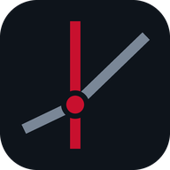

Repère n'est pas sur les magasins d'applications, et n'a pas besoin d'y être : ton navigateur sait l'installer lui-même. En deux gestes, l'icône rejoint tes autres applications, s'ouvre en plein écran, et fonctionne même sans réseau.
Il faut passer par Safari. Chrome et Firefox sur iPhone ne savent pas installer une application : c'est une limite d'iOS, pas de Repère.
Une fois installée, l'application s'ouvre sans la barre d'adresse et garde ta session : tu n'auras plus à te reconnecter à chaque fois.
Avec Chrome, Edge, Samsung Internet ou Brave, le navigateur propose souvent l'installation tout seul. Sinon :
Sur Firefox Android, le chemin est le même : menu, puis « Ajouter à l'écran d'accueil ».
Sans l'icône : menu ⋮ → « Diffuser, enregistrer et partager » → « Installer cette page en tant qu'application ».
Firefox pour ordinateur n'installe pas les applications web. Le plus simple est d'ajouter Repère aux favoris, ou d'utiliser un des navigateurs ci-dessus.
Presque rien : moins d'un mégaoctet, polices comprises. Ce n'est pas une application téléchargée, c'est un raccourci vers le site, avec une copie de quoi l'afficher hors réseau.
L'application s'ouvre et affiche ton planning tel qu'il était à ta dernière visite. Les modifications, elles, ont besoin du réseau pour être enregistrées : un bandeau te prévient quand tu es hors ligne.
Sur un appareil où tu ne t'es encore jamais connecté, il n'y a rien à afficher : l'écran d'attente te le dit, et se relance tout seul dès que la connexion revient. Tu peux aussi le toucher pour réessayer.
Non. Le site déclare explicitement n'utiliser ni caméra, ni micro, ni position, ni capteurs, et le navigateur fait respecter cette déclaration. Une application installée depuis un navigateur n'a pas plus de droits que l'onglet dont elle vient.
Comme n'importe quelle application : appui long sur l'icône puis « Supprimer » sur téléphone, ou clic droit sur l'icône puis « Désinstaller » sur ordinateur. Ton compte et ton planning ne sont pas touchés.
Non. L'application se met à jour toute seule à l'ouverture suivante.